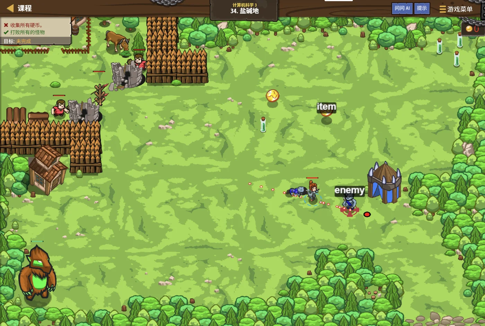

故事：盐碱地上铺满了编号的石块，塞尼克要用一张网把它们筛一遍。
规则很简单，他举着网：从最小的质数开始，
每遇到一个质数，就把它的倍数统统圈出去。
你一边圈一边数：这样圈完，剩下的就都是质数了。
对。而且别忘了——从它自己乘自己那里开始圈就行，前面早有人圈过了。
扣哒考级 · GESP PYTHON 五级 · 第 2 单元 | 星砂绿洲 STARDUST OASIS
泉眼筛网 欧几里得算法与素数筛法
Euclid & Sieve

塞尼克
沙海向导 · 你的向导
绿洲的泉眼上架着一面铜丝细网。
塞尼克用木勺舀起一瓢混着沙的水，倒在网上——沙粒留在网面，清水汇入池中。
你盯着那面网：所以……它是把"不要的"留在上面，让"要的"漏下去？
也可以反过来看。他笑了笑，你也可以说，它是把不要的一个个"划掉"。 求素数用的筛法，就是这么想的。
塞尼克用木勺舀起一瓢混着沙的水，倒在网上——沙粒留在网面，清水汇入池中。
你盯着那面网：所以……它是把"不要的"留在上面，让"要的"漏下去？
也可以反过来看。他笑了笑，你也可以说，它是把不要的一个个"划掉"。 求素数用的筛法，就是这么想的。
塞尼克 · 沙海向导
上一课我们学会了"判断一个数是不是质数"。可如果要找出 1 到 100 万之间的所有质数呢？一个个判？那就太慢了。
这一课教你两个老祖宗级别的算法：欧几里得算法和埃氏筛。它们又快又短，两千年了还在用。
assets/illustrations/py-L5-02-01_spring_sieve.webp
【配图位】绿洲泉眼上架着一面铜丝细网，混着沙粒的水从上方倒下：沙粒留在网面、聚成一个个被圈起的标记，清水从网下汇入石池；网边的石台上刻着一到三十的数字格，其中若干格被划上了斜线；一名披沙色斗篷的向导手持木勺站在网旁，水花在阳光下闪闪发亮。
0 单元导语与目标
Unit Overview
0.1 学习目标
1学完这个单元，你将能……
- 说清"筛法"和"试除法"的区别
- 独立写出埃氏筛
- 解释为什么从
i×i开始标记 - 用欧几里得算法求最大公约数
- 说出欧几里得算法为什么成立
- 了解线性筛"每个合数只筛一次"的思想
2对标 GESP 考纲（Python 五级）
- 掌握欧几里得算法（辗转相除法）求最大公约数
- 掌握埃拉托斯特尼筛法的原理与实现
- 理解筛法的时间复杂度优势
- 了解线性筛的基本思想
- 考核目标：能读懂筛法代码、能判断填空处的正确写法
0.2 考纲对照
| 本单元小节 | 对应考纲条目 | 真题常考形式 |
|---|---|---|
| 1 从试除法到筛法 | 两种求素数的思路 | 筛法比试除法快在哪里 |
| 2 埃氏筛 | 埃氏筛原理 | 为什么从 i×i 开始标记 |
| 3 埃氏筛的实现 | 筛法的代码与复杂度 | 循环边界、复杂度量级 |
| 4 欧几里得算法 | 辗转相除法 | gcd(105, 45) 是多少；调用序列 |
| 5 线性筛 | 线性筛的思想 | 保证每个合数只被筛一次的关键条件 |
1 从试除法到筛法
From Trial Division to Sieve
1.1 一个个试太慢了
用上一课的办法求 1~N 的所有质数
Python
# 上一课的写法：对每个数单独判断
for i in range(2, N + 1):
if isPrime(i): # 里面还要循环到 √i
print(i, end=" ")
# 假设 N = 1000000：
# 外层跑 100 万次
# 每次内层平均还要跑几百次
# → 一共大约几亿次运算，很可能超时问题所在
每个数都从零开始"独立判断"，前面算过的信息完全没被利用
1.2 筛法的想法：反过来想
换个思路：不要"判"质数，去"划掉"合数。
与其一个个去问"你是不是质数"，不如反过来：
从一个质数出发，把它的所有倍数（也就是合数）统统划掉。
从 2 开始一路划过去——最后剩下没被划掉的，就都是质数。
这个思路就叫"筛法"——像用筛子把沙子筛掉，只留想要的。
从一个质数出发，把它的所有倍数（也就是合数）统统划掉。
从 2 开始一路划过去——最后剩下没被划掉的，就都是质数。
这个思路就叫"筛法"——像用筛子把沙子筛掉，只留想要的。
手工演算一遍（1~30）
TEXT
先假设 2~30 全都是质数：
2 3 4 5 6 7 8 9 10 11 12 13 14 15 16 17 18 19 20 21 22 23 24 25 26 27 28 29 30
① 从 2 开始：2 是质数 → 划掉 2 的所有倍数（4、6、8、10、……、30）
② 下一个没被划掉的是 3 → 划掉 3 的倍数（6、9、12、15、……、30）
③ 下一个是 5 → 划掉 5 的倍数（10、15、20、25、30）
④ 下一个是 7 → 划掉 7 的倍数（14、21、28）
⑤ 下一个是 11 → 11×11 = 121 > 30，可以停了
剩下的：2 3 5 7 11 13 17 19 23 29 ← 全是质数核心观察
每个合数都会被某个更小的质数"顺手划掉"——
比如 12，被 2 划掉一次就够了
打个比方：
筛法就像从名册上划人——先把所有名字都写上，然后一波波划：
先划掉"所有 2 的倍数"，再划掉"所有 3 的倍数"，再划掉 5 的倍数……
划到最后，名册上剩下的名字，就是质数。
关键在于：一个人的名字只需要被划掉一次——不用每次都重新查他。
先划掉"所有 2 的倍数"，再划掉"所有 3 的倍数"，再划掉 5 的倍数……
划到最后，名册上剩下的名字，就是质数。
关键在于：一个人的名字只需要被划掉一次——不用每次都重新查他。
2 埃氏筛
Sieve of Eratosthenes
2.1 把合数一个个划掉
埃氏筛的骨架
Python
isPrime = [True] * (N + 1) # isPrime[i] 表示 i 是不是质数
isPrime[0] = isPrime[1] = False # 0 和 1 都不是质数
for i in range(2, N + 1):
if isPrime[i]: # i 是质数
for j in range(i * 2, N + 1, i):
isPrime[j] = False # ★ 划掉 i 的倍数三步走
① 开一个布尔数组；② 先假设全是质数；③ 从每个质数出发，把它的倍数划成合数
倍数从哪儿开始划？这里是第一个优化点。
上面的写法是从
（这一点真题里专门考过判断题，下面详细讲。）
i * 2 开始划的。
其实从 i * i 开始划就够了——
因为 i * 2、i * 3、…、i * (i−1) 这些数，
都含有一个比 i 更小的质因数，早就被更小的质数划掉了。（这一点真题里专门考过判断题，下面详细讲。）
2.2 为什么从 i×i 开始
一句话说清：
当质数
所以从
i 要划自己的倍数时，
i×i 之前的那些倍数（i×2、i×3……）
已经被更小的质因数划掉了——再划一遍是白费功夫。所以从
i * i 开始划，结果完全一样，但快得多。
图 2（SVG）：为什么倍数可以从 i×i 开始划
3 埃氏筛的实现
Implementing the Sieve
3.1 完整代码
埃氏筛标准写法
Python
N = 1000000
isPrime = [True] * (N + 1)
isPrime[0] = isPrime[1] = False
for i in range(2, int(N ** 0.5) + 1): # ★ 外层只到 √N
if isPrime[i]:
for j in range(i * i, N + 1, i): # ★ 从 i*i 起划
isPrime[j] = False
cnt = 0
for i in range(2, N + 1):
if isPrime[i]:
cnt += 1
print(cnt) # 1000000 以内有 78498 个质数两处优化都要用上
① 外层循环
② 内层
i * i <= N——i 超过 √N 就不用再划了；② 内层
j 从 i * i 开始
为什么外层也只到 √N 就够？
因为一旦
更直白的说法：一个合数
外层从 N 次降到 √N 次——又是一次大提速。
i > √N，那么 i * i > N——
i 在范围里已经没有任何倍数需要划了。更直白的说法：一个合数
n ≤ N 一定有一个
不超过 √N 的质因数，
所以 √N 以内的质数已经足够把 N 以内的合数全部划掉。外层从 N 次降到 √N 次——又是一次大提速。
3.2 它比试除法快多少
| 做法 | 大约要做多少次运算 | N = 10⁶ 时的量级 |
|---|---|---|
| 逐个试除 | N × √N | 约 10⁹（十亿） |
| 埃氏筛 | N log log N | 约 3 × 10⁶（三百万） |
结论：
埃氏筛的复杂度约为
对比一下：N = 10⁶ 时，试除法要十亿次量级，而埃氏筛只要三百万次——差了三百多倍。
这就是"换个思路"带来的威力：算法一改，从"肯定超时"变成"瞬间跑完"。
O(N log log N)，
非常接近线性。对比一下：N = 10⁶ 时，试除法要十亿次量级，而埃氏筛只要三百万次——差了三百多倍。
这就是"换个思路"带来的威力：算法一改，从"肯定超时"变成"瞬间跑完"。
4 欧几里得算法
Euclidean Algorithm
4.1 辗转相除：一除一替换
求最大公约数：两行就够
Python
def gcd(a, b):
while b != 0:
r = a % b # 求余数
a = b # 原来的除数变成新的被除数
b = r # 余数变成新的除数
return a # 除数为 0 时，被除数就是答案核心公式
终止条件 当
gcd(a, b) = gcd(b, a % b)终止条件 当
b == 0 时，gcd(a, 0) = a
算 gcd(105, 45) 的全过程
TEXT
gcd(105, 45)
105 % 45 = 15 → 换成 gcd(45, 15)
45 % 15 = 0 → 换成 gcd(15, 0)
b == 0，返回 15
所以 gcd(105, 45) = 15
验证：105 ÷ 15 = 7，45 ÷ 15 = 3，都除得尽 ✔
而且 15 是最大的（再大一点就除不尽 45 了）只用了 2 步
如果从 45 往下一个个试，最坏要试几十次——这就是算法的价值
4.2 为什么这样能得到答案
关键的观察：a 和 b 的公约数，就是 b 和 (a % b) 的公约数。
设
如果某个数 d 能同时整除 a 和 b， 那么它一定能整除
反过来说，如果 d 能整除 b 和 r， 那它也能整除
所以"a 和 b 的公共约数"与"b 和 r 的公共约数"是同一批数——最大值自然也相同。
于是 gcd(a, b) = gcd(b, a % b)，一路替换下去就行。
a = q × b + r（也就是 r = a % b）。如果某个数 d 能同时整除 a 和 b， 那么它一定能整除
r = a − q × b——因为右边两项它都能整除。反过来说，如果 d 能整除 b 和 r， 那它也能整除
a = q × b + r。所以"a 和 b 的公共约数"与"b 和 r 的公共约数"是同一批数——最大值自然也相同。
于是 gcd(a, b) = gcd(b, a % b)，一路替换下去就行。
还能写成递归，更短
Python
def gcd(a, b):
return a if b == 0 else gcd(b, a % b)
# 一行搞定：b 是 0 就返回 a，否则继续递归两种写法结果完全相同
迭代版好理解，递归版更短——考试里两种都可能出现
a 和 b 谁大谁小有关系吗？
没有关系。如果
所以欧几里得算法对 a > b 和 a < b 都适用，不需要提前排序。
这也是真题里考过的判断题。
a < b，
那么 a % b = a，
第一步就会自动把它俩"换个位置"：gcd(a, b) → gcd(b, a)。所以欧几里得算法对 a > b 和 a < b 都适用，不需要提前排序。
这也是真题里考过的判断题。
assets/illustrations/py-L5-02-02_euclid_basins.webp
【配图位】绿洲工程区两只大小不同的石池并排而立，中间用一条水槽相连：大水量的池反复往小池里倒，水面上刻着逐渐递减的刻度（105→45→15→0）；池壁上镶着齿轮与水口，最后两只池的水位停在同一个刻度上并同时亮起；一名披沙色斗篷的向导站在旁边举着刻度尺。
5 线性筛
Linear Sieve
5.1 让每个合数只被筛掉一次
埃氏筛浪费在哪里？
一个合数可能被划掉好几次。
比如 30：处理质数 2 时划一次、处理 3 时又划一次、处理 5 时再划一次——一共做了三遍无用的功。
线性筛（也叫欧拉筛）的想法就是：让每个合数只被"它的最小质因数"筛掉，一共只划一次。
这样复杂度就从
比如 30：处理质数 2 时划一次、处理 3 时又划一次、处理 5 时再划一次——一共做了三遍无用的功。
线性筛（也叫欧拉筛）的想法就是：让每个合数只被"它的最小质因数"筛掉，一共只划一次。
这样复杂度就从
O(N log log N) 降到真正的
O(N)——每个数只被访问常数次。
线性筛的完整代码
Python
composite = [False] * (N + 1) # composite[i] 表示 i 是合数
primes = [] # 收集找到的质数
for i in range(2, N + 1):
if not composite[i]:
primes.append(i) # i 没被标记过 → 它是质数
for p in primes: # 用已知的质数去筛
if i * p > N:
break # 超出范围就停
composite[i * p] = True # 把 i * p 标记成合数
if i % p == 0:
break # ★ 关键的一行最关键的一行就是最后那句
它的作用是：保证每个合数只被它的"最小质因数"筛掉一次
if (i % p == 0) break;它的作用是：保证每个合数只被它的"最小质因数"筛掉一次
5.2 关键的那一行
为什么
这时
如果再继续拿更大的质数 p′ 去筛
所以一旦 p 能整除 i，就立刻停下来。
i % p == 0 时就必须 break？
p 是从小到大遍历质数的。当 i % p == 0 时，
说明 p 就是 i 的最小质因数。这时
i × p 的最小质因数也就是 p——
已经被筛过了，任务完成。如果再继续拿更大的质数 p′ 去筛
i × p′，
那这个合数的最小质因数其实是 p（比 p′ 小），
它应该在"i′ = i × p′ / p"那一轮被 p 筛掉——现在筛就是抢了别人的活，会造成重复。所以一旦 p 能整除 i，就立刻停下来。
看看 12 是怎么被筛掉的
TEXT
i = 4 时（4 已被 2 筛过，是合数，不进 primes）：
primes = [2, 3]
① p = 2 → 筛掉 4×2 = 8；4 % 2 == 0 → break ✔
注意：如果没有 break，下一步会筛 4×3 = 12
但 12 的最小质因数是 2，应该由 6×2 来筛
——所以这里必须停手
i = 6 时（合数）：
① p = 2 → 筛掉 6×2 = 12；6 % 2 == 0 → break ✔
于是 12 只被筛了一次，而且是被它的最小质因数 2 筛掉的。12 只被筛了一次
而埃氏筛里，12 会被 2 和 3 各筛一次
图 4（SVG）：埃氏筛 vs 线性筛——重复劳动差在哪里
写线性筛最容易忽略的两点：
① 越界判断必须放在最前面。
写成
②
if ((long long)i * p > N) break;——
i * p 可能超过 int 的范围，要先转成 long long 再比。②
composite 数组的意思是"是合数"，不是"是质数"。
所以判断质数要写 if (!composite[i])——那个感叹号千万别丢。
6 代码实战
Level Practice
关卡
盐碱地
进入关卡 →思路：用埃氏筛把 1~N 之间的合数全部标记出来，

assets/stages/py-L5-02-stage1_salt_flat.webp
【截图位】盐碱地关卡：盐地石块阵列与筛选标记同框，代码编辑区可见质数筛的循环。
筛出全部质数，并输出个数和最大的几个
Python
N = 100000
isPrime = [True] * (N + 1)
isPrime[0] = isPrime[1] = False
for i in range(2, int(N ** 0.5) + 1):
if isPrime[i]:
for j in range(i * i, N + 1, i):
isPrime[j] = False
cnt = 0
last = 0
for i in range(2, N + 1):
if isPrime[i]:
cnt += 1
last = i # 记下最后一个（也就是最大的）
print(cnt, last)OUTPUT 9592 99991
验算 100000 以内一共有 9592 个质数，其中最大的是 99991
验算 100000 以内一共有 9592 个质数，其中最大的是 99991
和本单元的关系：
"先筛出质数表，再拿它去做别的事"是数论题的标准套路。
比如要判某个数是不是质数——只要
本单元的筛法，后面几课还会反复用到： 求质因数、判断哥德巴赫猜想、做质数相关的统计……都靠它打底。
去扣哒世界闯这一关 →
比如要判某个数是不是质数——只要
O(1) 查一下表就行，
比每次重新试除快得多。本单元的筛法，后面几课还会反复用到： 求质因数、判断哥德巴赫猜想、做质数相关的统计……都靠它打底。
assets/illustrations/py-L5-02-03_linear_sieve.webp
【配图位】盐碱地上一排编号石块，一块刻着"30"的石块只被一道光划过一次、印记干净清晰；旁边对比性地画出几道淡淡的、已熄灭的重复划痕（表示埃氏筛里被划了多次）；一名披沙色斗篷的向导手持一根细长的光杖，杖端刚点过那块石头，其余石块排成一条向远处延伸的线。
7 常见陷阱
Common Pitfalls

扣哒鸭 · 调试官
筛法和 gcd 的代码都很短，但边界特别容易写错。四条。
1
数组开小了，或者下标从 0 开始。

扣哒鸭：要筛到 N，数组就得开
开成
N + 1 ——
因为下标最大会用到 N 本身。开成
bool isPrime[N] 就差了一个格子，访问 N 时越界。正确写法：
bool isPrime[N + 1];2
初始化时忘了把 0 和 1 排除。

扣哒鸭：如果从
正确的做法是从 0 开始清空（或全局数组自动为 false）， 然后只把
i = 0 开始全部设成 true，
那 0 和 1 就会一直被当成质数。正确的做法是从 0 开始清空（或全局数组自动为 false）， 然后只把
i = 2 到 N 设成 true。正确写法：
for (int i = 2; i <= N; i++) isPrime[i] = true;3
内层循环从
i * 2 开始，或者写错步长。
扣哒鸭：从
还有步长必须是
i * 2 开始不会算错，但会重复劳动——
从 i * i 开始才对。还有步长必须是
j += i：写成 j++ 就变成"从 i² 起全划掉"，那是错的。正确写法：
for (int j = i * i; j <= N; j += i)4
gcd 函数忘了处理 b == 0 的情况。

扣哒鸭：循环的条件是
写成
而且如果一开始
b != 0，
循环结束时答案在 a 里，不在 b 里。写成
return b; 就全错了——那时候 b 一定是 0。而且如果一开始
b 就是 0，循环一次都不跑，返回的应该是 a。记牢：返回
a；且 gcd(a, 0) = a7 常见陷阱
Common Pitfalls
扣哒鸭 · 调试官
筛法和 gcd 的代码都很短，但边界特别容易写错。四条。
1
数组开小了，或者下标从 0 开始。
扣哒鸭：要筛到 N，数组就得开
开成
N + 1 ——
因为下标最大会用到 N 本身。开成
bool isPrime[N] 就差了一个格子，访问 N 时越界。正确写法：
bool isPrime[N + 1];2
初始化时忘了把 0 和 1 排除。
扣哒鸭：如果从
正确的做法是从 0 开始清空（或全局数组自动为 false）， 然后只把
i = 0 开始全部设成 true，
那 0 和 1 就会一直被当成质数。正确的做法是从 0 开始清空（或全局数组自动为 false）， 然后只把
i = 2 到 N 设成 true。正确写法：
for (int i = 2; i <= N; i++) isPrime[i] = true;3
内层循环从
i * 2 开始，或者写错步长。
扣哒鸭：从
还有步长必须是
i * 2 开始不会算错，但会重复劳动——
从 i * i 开始才对。还有步长必须是
j += i：写成 j++ 就变成"从 i² 起全划掉"，那是错的。正确写法：
for (int j = i * i; j <= N; j += i)4
gcd 函数忘了处理 b == 0 的情况。
扣哒鸭：循环的条件是
写成
而且如果一开始
b != 0，
循环结束时答案在 a 里，不在 b 里。写成
return b; 就全错了——那时候 b 一定是 0。而且如果一开始
b 就是 0，循环一次都不跑，返回的应该是 a。记牢：返回
a；且 gcd(a, 0) = a7 常见陷阱
Common Pitfalls
扣哒鸭 · 调试官
筛法的代码很短，但下标特别容易差一位。四条，条条都能让结果多一个少一个。
1
数组开小了。写
[True] * N 却要访问 isPrime[N]。
扣哒鸭：要表示 0 到 N，一共需要 N+1 个格子。
必须写
必须写
[True] * (N + 1)，忘了加 1 就会下标越界。正确写法：
[True] * (N + 1)2
忘了把 isPrime[0] 和 isPrime[1] 设成 False。
扣哒鸭：0 和 1 都不是素数，但一开始我们把所有格子都设成了 True。
所以这两格必须手动改掉，否则结果里会多出 0 和 1。
所以这两格必须手动改掉，否则结果里会多出 0 和 1。
正确做法：
isPrime[0] = isPrime[1] = False3
把内层循环写成从 2*i 开始，效率变低。
扣哒鸭：从
从
2*i 开始也能得到正确答案，但会重复划很多次。从
i*i 开始更快，因为比 i*i 小的倍数早就被更小的素数处理过了。推荐写法：
j = i * i 开始划4
以为筛法也能直接回答"某个很大的数是不是素数"。
扣哒鸭：筛法适合"一次性求出某个范围内所有素数"，
它需要一块和 N 一样大的数组。
只判断一个具体的数，用试除法更省地方。选哪种，要看题目问的是什么。
只判断一个具体的数，用试除法更省地方。选哪种，要看题目问的是什么。
选择原则：范围求全部素数 → 筛法；单个判断 → 试除法
8 题目练习
Practice
第 1 题改编自 2026 年 9 月 · Python 五级 第 4 题，其余为原创练习题。
改编自 2026 年 9 月 · Python 五级 · 第 4 题单选题
绿洲的水渠要按最大公约数分段。下面的函数用欧几里得算法求最大公约数，则
gcd(105, 45) 的结果是（ ）。1 def gcd(a, b): 2 if b == 0: 3 return a 4 else: 5 return gcd(b, a % b)
A.3 B.5 C.15 D.45
查看答案与详解
答案：C。欧几里得算法的核心是
一步步跟一遍：
gcd(105, 45) → 105 % 45 = 15 → gcd(45, 15)；
45 % 15 = 0 → gcd(15, 0)；
b == 0，返回 a = 15。
两个要点：① 递归出口是 "b 等于 0 时返回 a"；
② 就算一开始 a < b 也没关系，第一次取余就会把它们换过来。
复杂度：每两步就把数字缩小一半左右，所以是 O(log n)。
对应小节4 欧几里得算法。
gcd(a, b) = gcd(b, a % b)，把两个数不断缩小，直到余数为 0。一步步跟一遍：
gcd(105, 45) → 105 % 45 = 15 → gcd(45, 15)；
45 % 15 = 0 → gcd(15, 0)；
b == 0，返回 a = 15。
两个要点：① 递归出口是 "b 等于 0 时返回 a"；
② 就算一开始 a < b 也没关系，第一次取余就会把它们换过来。
复杂度：每两步就把数字缩小一半左右，所以是 O(log n)。
对应小节4 欧几里得算法。
原创练习题单选题
用埃氏筛求 1 到 30 之间的素数，外层循环判断到哪个数就够了？（ ）
A.15 B.30 C.5 D.7
查看答案与详解
答案：C。只需要筛到 √30 ≈ 5.47，所以 i 最大取到 5 就够了。
原因：如果某个数 x 还有大于 √30 的因数，那它一定有一个小于 √30 的因数配对， 而这个小数早就在之前的轮次里被处理过了。
对应小节3 埃氏筛的实现。
原因：如果某个数 x 还有大于 √30 的因数，那它一定有一个小于 √30 的因数配对， 而这个小数早就在之前的轮次里被处理过了。
对应小节3 埃氏筛的实现。
原创练习题单选题
筛法中，当 i = 5 时，内层循环应该从哪个数开始划掉？（ ）
A.10 B.15 C.25 D.5
查看答案与详解
答案：C。应该从
为什么？因为 10 = 2×5、15 = 3×5、20 = 4×5 这些， 都已经被 2、3（更小的素数）在之前的轮次里划掉了，重复划没有意义。
对应小节3 埃氏筛的实现。
i * i = 25 开始。为什么？因为 10 = 2×5、15 = 3×5、20 = 4×5 这些， 都已经被 2、3（更小的素数）在之前的轮次里划掉了，重复划没有意义。
对应小节3 埃氏筛的实现。
原创练习题判断题
用埃氏筛求素数表时，数组的长度应该开成 N+1（表示下标 0 到 N）。（ ）
查看答案与详解
答案：正确（√）。因为下标从 0 开始，要表示 0 到 N 共 N+1 个数，
就需要 N+1 个格子。
常见的写法：
对应小节3 埃氏筛的实现。
常见的写法：
isPrime = [True] * (N + 1)。对应小节3 埃氏筛的实现。
原创练习题单选题
下列 Python 代码执行后，输出的结果是（ ）。
1 def g(a, b): 2 if b == 0: 3 return a 4 return g(b, a % b) 5 print(g(36, 24))
A.6 B.12 C.24 D.36
查看答案与详解
答案：B。这是辗转相除法的递归写法：
g(36,24) → g(24, 36%24=12) → g(12, 24%12=0) → 返回 12。
验证：36 = 12×3，24 = 12×2，最大公约数确实是 12。
对应小节5 欧几里得算法再深入。
g(36,24) → g(24, 36%24=12) → g(12, 24%12=0) → 返回 12。
验证：36 = 12×3，24 = 12×2，最大公约数确实是 12。
对应小节5 欧几里得算法再深入。
原创练习题判断题
要判断单独一个大整数是不是素数，用埃氏筛比用试除法更合适。（ ）
查看答案与详解
答案：错误（×）。筛法需要开一块和"范围"一样大的数组，
如果只判断一个数，就要开到那个数量级，既慢又占内存。
正确选择：单个判断用试除法（试到 √n）；
求一个区间内的全部素数，才用筛法。
对应小节1 从"试除法"到"筛法"；4 筛法的效率。
如果只判断一个数，就要开到那个数量级，既慢又占内存。
正确选择：单个判断用试除法（试到 √n）；
求一个区间内的全部素数，才用筛法。
对应小节1 从"试除法"到"筛法"；4 筛法的效率。
原创练习题单选题
下列 Python 代码执行后，输出几个数？（ ）
1 N = 20 2 p = [True] * (N + 1) 3 p[0] = p[1] = False 4 i = 2 5 while i * i <= N: 6 if p[i]: 7 j = i * i 8 while j <= N: 9 p[j] = False 10 j = j + i 11 i = i + 1 12 cnt = 0 13 for k in range(2, N + 1): 14 if p[k]: 15 cnt = cnt + 1 16 print(cnt)
A.7 B.8 C.9 D.6
查看答案与详解
答案：B。20 以内的素数是：2、3、5、7、11、13、17、19，共 8 个。
建议：这类题目不要心算，把数字写出来一个个数， 或者记住这段代码的结构——考试里出现的概率很高。
对应小节3 埃氏筛的实现；4 筛法的效率。
建议：这类题目不要心算，把数字写出来一个个数， 或者记住这段代码的结构——考试里出现的概率很高。
对应小节3 埃氏筛的实现；4 筛法的效率。
原创练习题编程题
题目要求：用埃氏筛求 1 到 100 之间所有素数，并输出它们的个数以及所有素数之和。
查看参考答案与要点
N = 100
isPrime = [True] * (N + 1)
isPrime[0] = isPrime[1] = False
i = 2
while i * i <= N:
if isPrime[i]:
j = i * i
while j <= N:
isPrime[j] = False
j = j + i
i = i + 1
count = 0
total = 0
for k in range(2, N + 1):
if isPrime[k]:
count = count + 1
total = total + k
print("个数：", count)
print("总和：", total)
输出：个数为 25，总和为 1060（这是常考的两个数，建议记住）
要点：
① 数组长度必须是 N+1；
② 别忘了把 0 和 1 标成 False；
③ 收集结果时从 2 开始遍历；
④ 统计个数和求和可以在同一个循环里完成，不用跑两遍。
对应小节3 埃氏筛的实现。
9 本单元小结
Unit Summary
塞尼克 · 沙海向导
三句话收尾：一、要一批素数，用筛法；只判一个数，用试除法。
二、筛法的两个优化：只筛到 √N、从 i*i 开始划。
三、gcd(a, b) = gcd(b, a % b)，循环和递归两种写法都要会。
记住这些，五级的数论部分你就站稳了。
你在泉眼筛网前收获了什么
- 两种方法的分工——区间求全部素数用筛法，单个判断用试除法。
- 埃氏筛思路——先假设全是素数，再从 2 开始把倍数标记掉。
- 标记数组——
[True] * (N + 1)用布尔值记录每个数的状态。 - 两个优化——外层只到 √N；内层从
i * i开始。 - 别忘了 0 和 1——
isPrime[0] = isPrime[1] = False。 - 欧几里得算法——循环写法与递归写法等价，原理是"公约数集合不变"。
- 算法效率——同样的结果，筛法能比试除法快上百倍，这就是算法的价值。